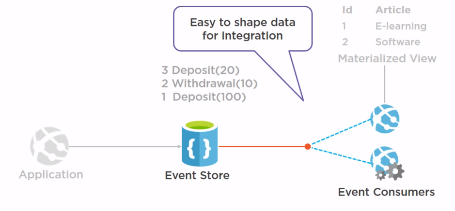
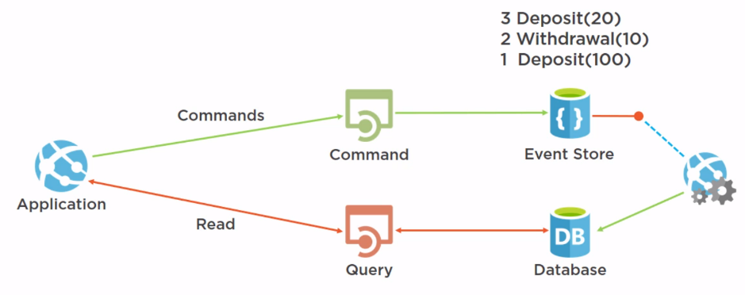
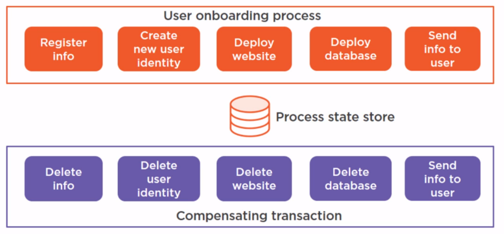
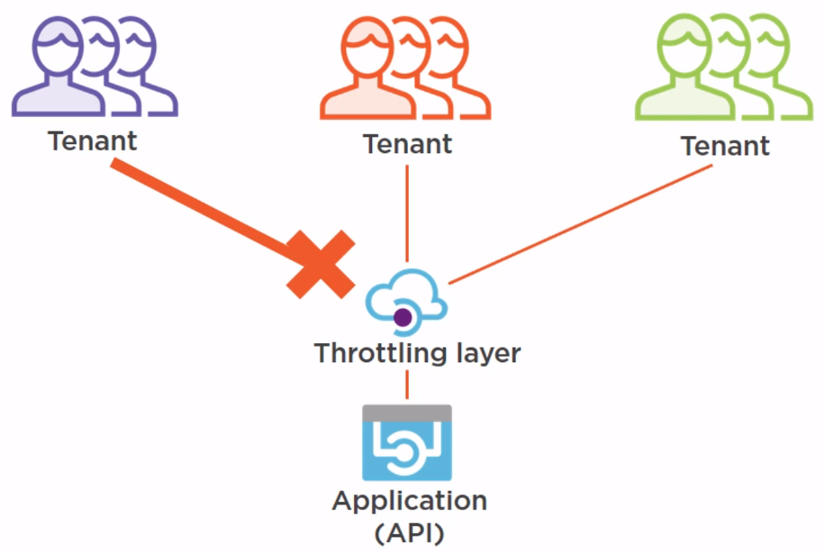
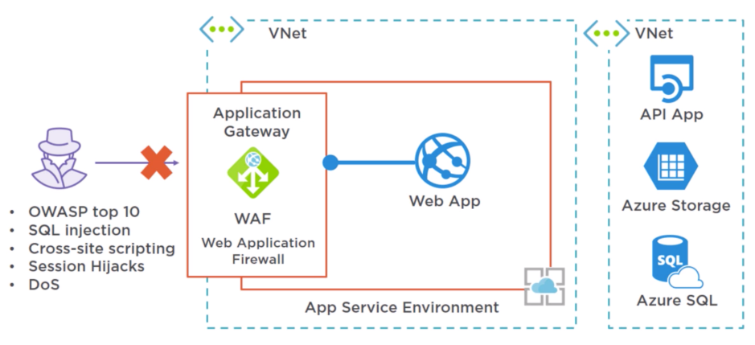
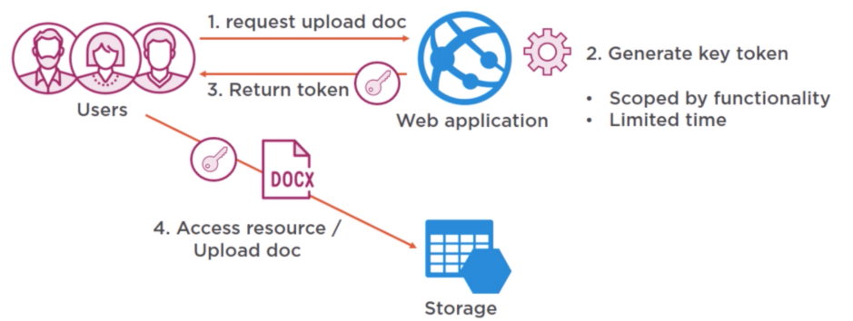
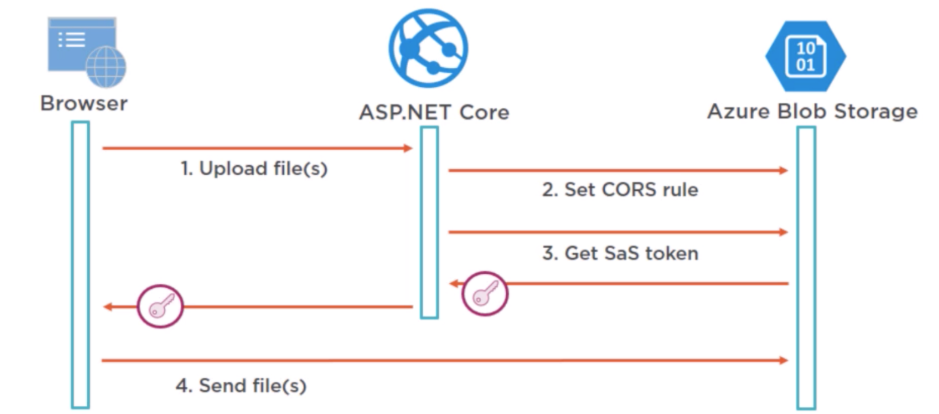

Azure Design Pattern¶
Just like programming, for many technical challenges for using cloud and Azure there are best practices. We call these best practices as Design Pattern. This blog introduce these design patterns and also discuss relevant tools on Azure.
Contents
Introduction¶
We categorize the design patterns into followings:
Design and Implementation
External Config Store
Federated Identity
Gatekeeper
Runtime Reconfiguration
Valet Key
Data Management and Performance
Automatic Scaling
Cache-aside
CQRS
Event sourcing
Sharding
Static content hosting
Availability and resilience
Circuit breaker
Compensating transaction
Health endpoint monitoring
Queue-based loading levelling
Retry
Throttling
Data Management and Performance¶
Event sourcing¶
The problem with storing the current state of the data
direct CRUD operations slow down Performance
data conflicts
shaping data is difficult
The Event Sourcing Pattern
Things to consider:
Get the current state by replaying events for an entity (id)
Event sequence
Event version
Backup/restore/retention
Append only
Lag in publishing and processing events will cause eventual consistency
Event consumers should only process events once
Event sourcing is complex to implement
Possible framework: NEventStore -> open source event store
Sharding Pattern¶
The problem with having a single database
scaling your database up (more resources) isn’t sufficient
data needs to be stored in specific geographics regions
Possible framework: Elastic DB Tools for Azure
Static Content Hosting Pattern¶
When to use this pattern:
increase application Performance
decrease resource costs
increase content availability
Things to consider:
design a deployment strategy - for application and content
should only be accessible to the target audience
use https where possible
secure the content (valet key token)
for more advanced capability - use a content delivery network (CDN)
Azure CDN
Azure CDN profile
Azure blob storage
website
points of presence (POP)
The Cache-aside Pattern¶
Pick the right data to be cached
simple data
data that is needed often
and doesn’t change often
Things to be considered:
Consistency isn’t guaranteed by the pattern
data can be changed by other processes
most caches have expiration policies
balance between performance and consistency
to optimize performance, pre-populate the cache
and pick when data to pre-populate
About Azure Redis Cache
cache-as-a-service
in-memory data structure store
recommended cache to use with Azure
based on the open source redis platform
highly available (99.9%)
key/value structure
publish/subscribe
premium features
data persistence
redis cluster
CQRS pattern¶
The problem with mixing reads and writes
simulaneous transactions lead to data contention and conflicts
services and data sources and expensive to scale
security isn’t granular
CQRS pattern looks like following:
Availability and resilience¶
Circuit Breaker Pattern¶
Non-transient failures
Retrying will waste resources
Waiting on a timeout also wastes resources
Can change the state to half-open:
Amount of errors
Type of errors
After a predetermined time
Open source library -> polly: https://github.com/App-vNext/Polly/wiki/Circuit-Breaker
Compensating Transaction Pattern¶
reverting failed steps in distributed system is difficult
Health Endpoint Monitoring Pattern¶
Technical challenges:
Monitoring tools are too simple
The system doesn’t provide enough information
Possible solutions:
Azure Monitor
Azure Advisor
Azure Resource Health
Azure Network Watcher
Security Center
Application Insights
Operation Management Suite
Queue-based load levelling pattern¶
The problem with calling services directly
Not scalable
Diminish availability
Growing costs
Possible solution: Azure storage queue
Retry pattern¶
Azure storage has retry policy by default
Throttling Pattern¶
To handle sudden increases in traffic
To guarantee application uptime
To prevent specific users or tenants from overloading the application
Possible solution: API management
Design and Implementation¶
External Configuration Store Pattern¶
Technical challenges:
Configuration is part of the deployment
Multiple applications use the same configuration
Hard to control access rights
When to use pattern
Share configuration
Manage configuration centrally
Audit configuration access
Azure Key Vault
Stores (Certificates, Keys, Secretes)
Logging
Highly available
Backed-up
Federated Identity Pattern¶
Why:
Single sing-on
Authenticate ‘external’ users B2B & B2C
Different tenants, different IDPs
Azure Active Directory
Identity as a service
Authentication
Multi-factor authentication
Advanced threat detection
Gatekeeper Pattern¶
Azure Gateway -> only expose things necessary
Things to consider:
Sensitive information, in a high security environment
Distributed system where you need centralized filtering and monitoring
However, performance impact of gateway may be high
Runtime Reconfiguration Pattern¶
Things to consider:
External configuration
Get changes: use the hosting environment to subscribe to changes; poll for changes
Apply changes: apply changes at runtime; restart only when needed
.net core has the support
Valet Key Pattern¶
 Resources¶
https://github.com/bmaluijb/CloudDesignPatterns
https://docs.microsoft.com/en-us/azure/architecture/patterns/
Written by Binwei@Singapore